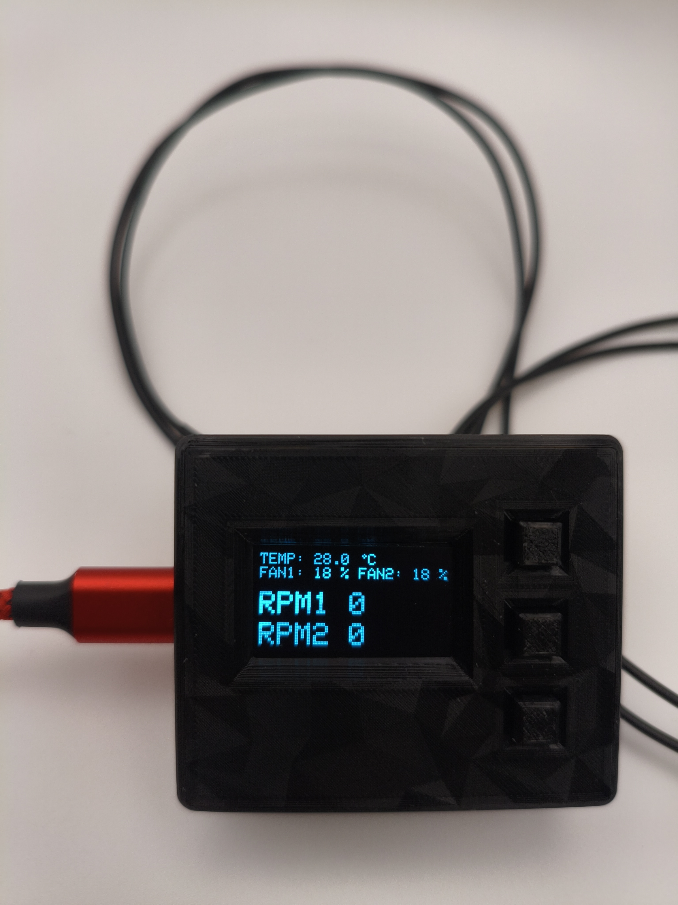
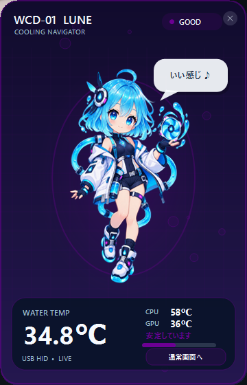
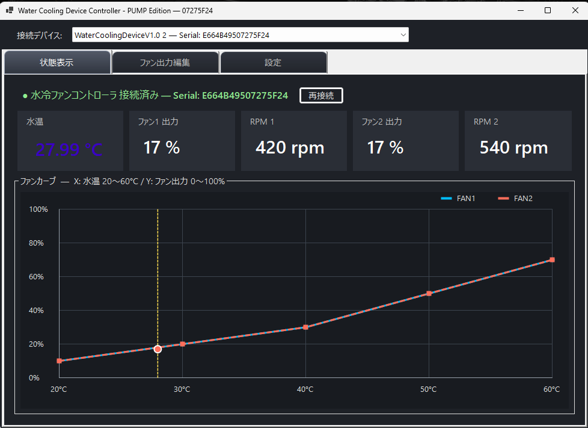
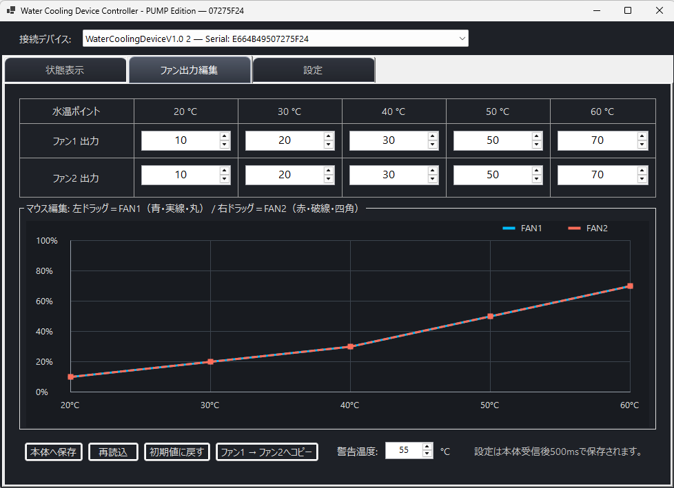
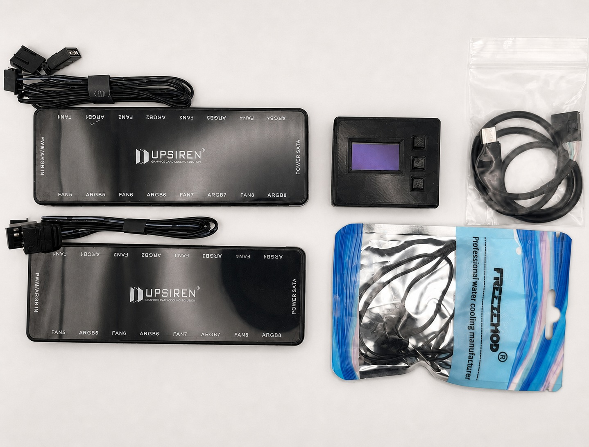
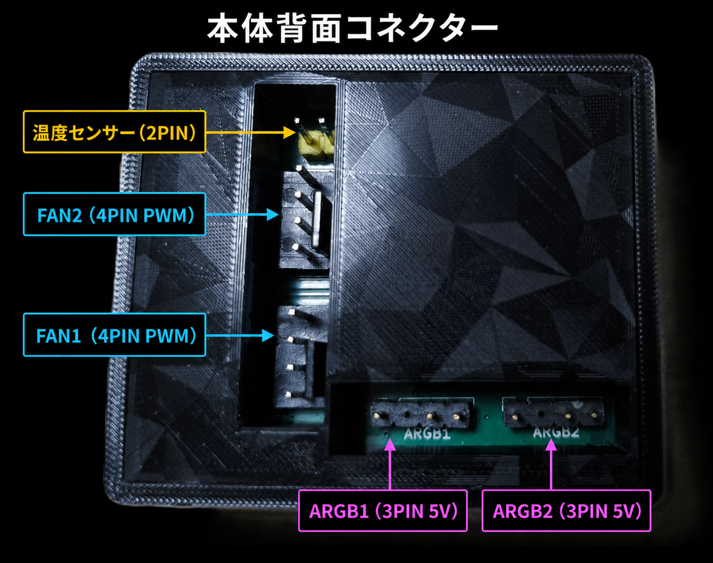

水温連動PWM
FAN1／FAN2を独立したファンカーブで制御します。


水冷PC用 ファン・ARGBコントローラー
水温連動ファン制御、回転数監視、OLED表示、ARGB制御を小型ボディにまとめました。
参考販売価格：12,800円（税込）
実際の販売価格・在庫・販売状況は、メルカリの出品一覧でご確認ください。
製品概要
CPU温度の瞬間的な変化ではなく、冷却ループ全体の状態を表す水温に合わせてファンを動かします。
設定は本体へ保存されるため、Windowsアプリを起動していない状態でも基本的な冷却制御を継続します。ケースによってはマザーボード裏側の配線スペースにも収納できます。
主な機能
FAN1／FAN2を独立したファンカーブで制御します。
水温・PWM Duty・RPM・動作状態を本体で確認できます。
ARGB1／ARGB2を別々のライティングデバイスとして認識します。
Windowsアプリを閉じても、水温監視とファン制御を続けます。
FAN1／FAN2に個別のファンカーブを設定できます。同じハブに接続したファンは同じPWM設定で動作します。
ARGB1とARGB2をWindows上で別々に認識します。Windows 11 23H2以降のDynamic Lightingから操作できます。
フェイルセーフ
警告温度を超えた場合FAN1／FAN2をDuty 100%に固定
水温センサーの断線・短絡・異常値FAN1／FAN2をDuty 100%に固定
OLEDには高水温時「HIGH WATER」、センサー異常時「SENSOR ERROR!」を表示します。本製品だけで水冷システム全体の安全を保証するものではありません。
Windows / Linux
水温、PWM Duty、RPMをリアルタイム表示し、ファンカーブ、警告温度、OLED表示などを設定できます。
Linux向け公式設定アプリは現在公開されていません。本体の基本制御はアプリなしで動作し、カスタムUI向け通信仕様はGitHubで公開されています。


USB識別情報
VID／PIDはRaspberry Pi財団より商用利用可能な固定番号として割り当てられています。番号の割り当ては、本製品の認定・保証を意味するものではありません。
セット内容・接続
水温センサーはGPUブロックやラジエーターの空きポートへ取り付けできます。


4ピンPWMファン専用です。ARGBは3PIN 5V専用で、4PIN 12V RGBには接続できません。配線はPCの電源を切った状態で行ってください。
README、Windowsアプリ、C#ソースコード、通信仕様を公開しています。
FAQ
はい。設定は本体へ保存され、基本的な水温監視とファン制御を継続します。
使えません。標準のファン端子は4ピンPWMファン専用です。
3PIN 5V ARGB専用です。4PIN 12V RGBには接続しないでください。
FAN2を固定Duty出力にする実験的なPUMPモードがありますが、主機能・動作保証の対象外です。